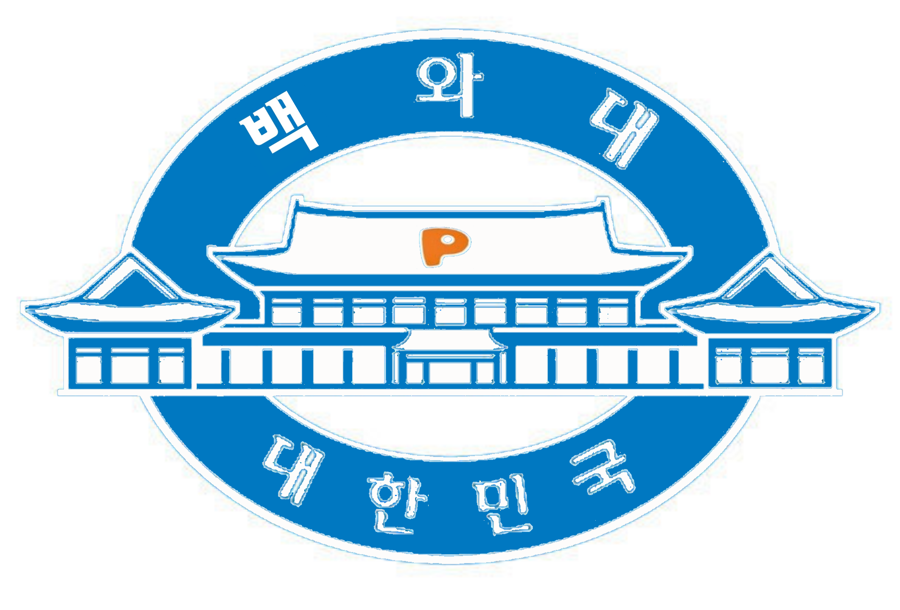

백와대 일정
백와대의 일정
백와대는 직원 3명과 그외 김민우, 김예승, 심상후, 임성현과 2018년 8월 20일 국립현대미술관 서울관를 방문할 예정입니다.
- 8월 20일 09시 정각까지 주안역 2층 로비(다이소 앞) 집결
- 09:05 1호선 용산급행 탑승(9-1)
- 09:39 신길역 하차
- 09:49 환승후 5호선 상일동행 탑승(1-1,8-1)
- 10:04 광화문역 하차
- 2번 출구에서 광화문한국통신.KT정류소로 이동
- 종로 11 탑승후 2정류장 후 정독도서관 하차
- 버스 반대방향으로 국립현대미술관서울관까지 도보